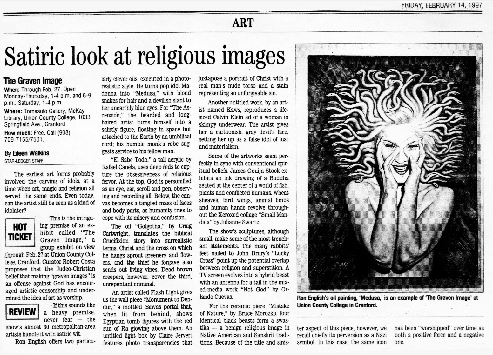

Exhibitions
The Graven Image, Tomasulo Gallery, McKay Library, Union County College, Cranford, New Jersey, US, February 14–27, 1997.
Literature
Eileen Watkins, “Satiric look at religious images,” The Star-Ledger, February 14, 1997.
Ron English, Popaganda: The Art & Subversion of Ron English (San Francisco: Last Gasp, 2001), p. 128. ISBN 1-887128-60-3.
Notes
This work references Madonna.
This composition was later adapted by the artist as a limited-edition print in the Vinyl Chord: A Revolutionary Record Store series.
Ancillary Documentation
The following materials document the Madonna source reference, published coverage of the work, and a later related print adapting the composition.
